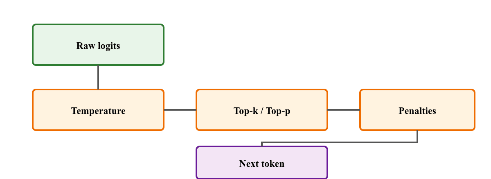

I sampled with temperature 2.0 and got poetry. I sampled with temperature 0.1 and got the same boring sentence twelve times. Somewhere in between lives the model people actually want.
Greedy, Indecisively Sampling AI Agent
This section continues from Section 4.2, which covered the core stochastic sampling methods: random, temperature, top-k, top-p, min-p, and typical sampling. Here we cover the penalty mechanisms that fix the repetition problem these methods do not address, the practical recipe for combining sampling strategies, and a hands-on lab visualizing how each knob reshapes the distribution. These decoding strategies are exactly what every LLM API exposes through its temperature, top_p, and penalty knobs, so understanding them lets you tune any chatbot or agent to the personality and style your application needs.
Prerequisites
This section continues from Section 4.2. Familiarity with temperature, top-k, top-p, and min-p sampling from that section is assumed.

In 2019, a short story generated by GPT-2 with nucleus sampling at p=0.9 was a finalist in a Japanese literary prize. The judges did not know it was machine-written. The author who submitted it later confessed it was 80% human-edited, but the lesson stuck: the choice of decoder, not just the choice of model, can make the difference between gibberish and fiction worth reading. Sampling strategy is not a postprocessing detail. It is part of the model.
Having covered the core sampling primitives in Section 4.2, we now add the penalty knobs that tame repetition, learn how to stack the filters together, and run a lab that makes the effects visible.
4.2.7 Repetition Penalty, Frequency Penalty, Presence Penalty
Even with good sampling strategies, language models tend to repeat themselves. Several penalty mechanisms address this:
Repetition Penalty
Introduced by Keskar et al. (2019), repetition penalty directly modifies the logits of tokens that have already appeared in the generated text:
Here θ > 1 reduces the probability of repeated tokens. A value of θ = 1.0 means no penalty; values of 1.1 to 1.3 are common.
Frequency and Presence Penalties
Popularized by the OpenAI API, these work by subtracting from logits based on token counts:
- Frequency penalty: Subtracts α × count(token) from the logit. Penalizes tokens proportionally to how often they have appeared. Good for reducing word-level repetition.
- Presence penalty: Subtracts β from the logit if the token has appeared at all (regardless of count). Encourages the model to explore new topics.
import torch.nn.functional as F
import torch
# Repetition and frequency/presence penalties: scale down logits of
# already-generated tokens to discourage the model from repeating itself.
def apply_repetition_penalty(logits, generated_ids, penalty=1.2):
"""Apply repetition penalty to logits for already-generated tokens."""
for token_id in set(generated_ids.tolist()):
if logits[token_id] > 0:
logits[token_id] /= penalty
else:
logits[token_id] *= penalty
return logits
def apply_frequency_presence_penalty(logits, token_counts,
freq_penalty=0.5, presence_penalty=0.5):
"""Apply OpenAI-style frequency and presence penalties."""
for token_id, count in token_counts.items():
logits[token_id] -= freq_penalty * count
logits[token_id] -= presence_penalty # flat penalty if present
return logits
# Demonstration
logits = torch.tensor([4.0, 3.0, 2.5, 2.0, 1.5])
tokens = ["the", "cat", "sat", "on", "mat"]
generated = torch.tensor([0, 1, 2]) # "the", "cat", "sat" already generated
original_probs = F.softmax(logits, dim=-1)
penalized = apply_repetition_penalty(logits.clone(), generated, penalty=1.3)
penalized_probs = F.softmax(penalized, dim=-1)
print("Token | Original | Penalized")
for i, t in enumerate(tokens):
marker = " *" if i in generated.tolist() else ""
print(f"{t:9s} | {original_probs[i]:.4f} | {penalized_probs[i]:.4f}{marker}")
Notice how the penalty shifts probability mass from already-generated tokens ("the," "cat," "sat") toward new tokens ("on," "mat"), encouraging the model to avoid repetition.
Decision Framework: Choosing a Decoding Method
Use this table as a quick reference when configuring generation parameters.
| Method | What It Controls | Typical Range | Best For |
|---|---|---|---|
| Temperature | Sharpness of the probability distribution | 0.1 to 1.5 | Global creativity dial; use lower for factual tasks, higher for brainstorming |
| Top-k | Hard cap on number of candidate tokens | 10 to 100 | Simple truncation; good baseline for casual generation |
| Top-p (Nucleus) | Cumulative probability threshold for candidates | 0.8 to 0.99 | Adaptive truncation; adapts to each token's confidence level |
| Min-p | Minimum probability relative to the top token | 0.01 to 0.1 | Pruning junk tokens; pairs well with temperature |
| Repetition Penalty | Penalty for tokens already generated | 1.0 to 1.3 | Reducing loops and repetitive phrases in long outputs |
| Typical Sampling | Filters by information content (surprisal) | 0.8 to 0.99 (mass param) | Producing text that matches human-like entropy patterns |
4.2.8 Combining Sampling Methods
In practice, these methods are often combined. A typical pipeline might apply transformations in this order:
- Repetition penalty on the raw logits
- Temperature scaling
- Top-k filtering (if used)
- Top-p filtering
- Sample from the remaining distribution
Applying both top-k and top-p simultaneously can produce unexpected behavior. If k=50 but p=0.9 only covers 5 tokens, the effective filter is top-p (more restrictive). If k=5 but p=0.99 covers 200 tokens, the effective filter is top-k. Be intentional about which filter is the binding constraint, and consider using only one at a time unless you have a specific reason to combine them.
4.2.9 Lab: Visualizing Sampling Distributions
Objective
Build an interactive comparison that runs the same logit vector through temperature scaling, top-k filtering, top-p filtering, and report the active-token count, top-1 probability mass, and entropy for each method. The output lets you build intuition for how each strategy reshapes the distribution.
Steps
- Simulate a realistic 100-token logit vector with a few clearly dominant entries.
- Compute the softmax under three temperatures (1.0, 0.5, 1.5).
- Apply top-k = 10 and top-p = 0.9 and renormalize each.
- For each variant, report active-token count, top-1 probability, and entropy.
# Side-by-side comparison: run the same logit vector through greedy,
# top-k, top-p, and min-p to show how each strategy reshapes the output.
import torch
import torch.nn.functional as F
# Simulate a realistic token distribution from a language model
torch.manual_seed(42)
logits = torch.randn(100) # 100 tokens for visualization
logits[0] = 5.0 # make a few tokens clearly dominant
logits[1] = 3.5
logits[2] = 3.0
methods = {
"Original (T=1.0)": F.softmax(logits, dim=-1),
"T=0.5": F.softmax(logits / 0.5, dim=-1),
"T=1.5": F.softmax(logits / 1.5, dim=-1),
}
# Top-k=10
top_k_logits = logits.clone()
threshold = torch.topk(top_k_logits, 10).values[-1]
top_k_logits[top_k_logits < threshold] = float('-inf')
methods["Top-k=10"] = F.softmax(top_k_logits, dim=-1)
# Top-p=0.9
probs = F.softmax(logits, dim=-1)
sorted_p, sorted_i = torch.sort(probs, descending=True)
cumsum = torch.cumsum(sorted_p, dim=-1)
mask = cumsum - sorted_p > 0.9
sorted_p[mask] = 0
sorted_p /= sorted_p.sum()
top_p_probs = torch.zeros_like(probs)
top_p_probs.scatter_(0, sorted_i, sorted_p)
methods["Top-p=0.9"] = top_p_probs
for name, probs in methods.items():
nonzero = (probs > 1e-6).sum().item()
top1 = probs.max().item()
entropy = -(probs[probs > 0] * probs[probs > 0].log()).sum().item()
print(f"{name:20s} | active tokens: {nonzero:3d} | top-1 prob: {top1:.4f} | entropy: {entropy:.3f}")Expected output
The five rows reveal the key differences: low temperature (T=0.5) makes the distribution very peaked, with the top token getting 81% of the probability mass. Top-p=0.9 is the most restrictive here, keeping only 5 tokens and achieving the lowest entropy. These numbers help you develop intuition for how each method reshapes the probability landscape.
Stretch goals
- Change the temperature from 0.5 to 0.01. How many "active tokens" effectively remain? What happens to the entropy?
- Try combining top-k=10 with temperature=0.5. Which constraint is the binding one? Is the result different from using top-k=10 alone?
- Set top-p to 0.99 vs. 0.5. How does the number of active tokens change? At what p value do you start losing important candidates?
The implementations above build temperature scaling, top-k, top-p, and repetition penalty from scratch for pedagogical clarity. In production, use Hugging Face Transformers (install: pip install transformers), which wraps all these methods into a single generate() call.
In practice, using both top_k=50 and top_p=0.9 together works better than either alone. Top-k provides a hard ceiling on candidates while top-p adapts to the confidence distribution of each token.
Adaptive sampling is an emerging area. Min-p sampling (2023) dynamically adjusts the probability threshold based on the model's confidence, performing better than fixed top-p across diverse generation tasks. Mirostat controls output perplexity directly rather than manipulating the probability distribution. Classifier-free guidance, borrowed from image diffusion, is being adapted for text to steer generation toward desired attributes without additional classifiers.
- Temperature is the most fundamental knob: it scales logits before softmax, controlling how peaked or flat the distribution is. Lower values favor focus; higher values favor diversity.
- Top-k restricts sampling to a fixed number of tokens. Simple but not adaptive to context.
- Top-p (nucleus) keeps the smallest set of tokens exceeding a cumulative probability threshold, adapting naturally to model confidence. It is the most widely used method in production.
- Min-p filters by a minimum relative probability, offering an alternative adaptive approach with a simpler conceptual model.
- Typical sampling selects tokens whose information content is close to the distribution entropy, producing naturally "surprising" but not shocking text.
- Repetition/frequency/presence penalties combat the tendency of language models to repeat themselves. Choose based on whether you want count-proportional or binary penalization.
- In practice, these methods are combined: temperature + top-p + repetition penalty is a common default configuration.
Show Answer
Show Answer
Show Answer
Show Answer
Exercises
Given logits [3.0, 1.0, 0.5, 0.0] over 4 tokens, compute the softmax probabilities at (a) T=1.0 (no scaling), (b) T=0.5 (sharpening), (c) T=2.0 (smoothing). For each, identify the probability of the top token. (d) What temperature would make the top token's probability exactly 0.99?
Answer Sketch
(a) T=1.0: exp([3, 1, 0.5, 0]) = [20.09, 2.718, 1.649, 1.0], sum = 25.46. Probs ≈ [0.789, 0.107, 0.065, 0.039]. Top = 0.789. (b) T=0.5: scaled logits = [6, 2, 1, 0], exp = [403.4, 7.39, 2.718, 1.0], sum = 414.5. Probs ≈ [0.973, 0.018, 0.0066, 0.0024]. Top = 0.973. (c) T=2.0: scaled logits = [1.5, 0.5, 0.25, 0], exp = [4.48, 1.65, 1.28, 1.0], sum = 8.41. Probs ≈ [0.533, 0.196, 0.153, 0.119]. Top = 0.533. (d) Need $e^{3/T} / Z = 0.99$, so other 3 tokens collectively contribute 0.01. Approximately, the gap of (3-1)/T must be large enough that $e^{2/T} \geq 100$, so 2/T > 4.6, i.e., T < 0.43. Numerically, T ≈ 0.4 gives top probability ≈ 0.99. Pattern: T pulls probability toward uniformity (T → ∞) or toward one-hot (T → 0); the "interesting" range is roughly 0.5 to 2.0.
You have two next-token distributions: (A) "after the" with one strong candidate "moon" at 0.85 and a long tail; (B) "and then he" with many plausible continuations each around 0.05 probability. (a) Predict how many tokens top-k=10 keeps in each case. (b) How many does top-p=0.9 keep in each case? (c) Why does top-p adapt better to varying confidence?
Answer Sketch
(a) Top-k=10 always keeps exactly 10 tokens regardless of the distribution shape. In case A, the 10th token might have probability 0.001, so we keep 9 tokens that contribute almost nothing. In case B, the 10th token has probability ~0.04, so all 10 are reasonable choices. (b) Top-p=0.9 in case A: 0.85 + next few tokens (say 0.05 + 0.03 + 0.02) hit 0.95 quickly; nucleus might be 3-4 tokens. In case B: need many tokens at 0.05 each to accumulate to 0.9, so nucleus is ~18 tokens. (c) Top-p adapts because the threshold is on cumulative probability, not on rank. When the model is confident, the nucleus auto-shrinks; when uncertain, it auto-expands. This means top-p inherently respects the model's epistemic state, while top-k forces a one-size-fits-all choice that is either wasteful (when confident) or restrictive (when uncertain).
OpenAI's API exposes both frequency_penalty and presence_penalty. (a) For a token that has appeared 5 times so far with frequency_penalty=0.3, what is the logit adjustment? With presence_penalty=0.3? (b) Describe a use case where frequency_penalty is preferred. (c) Describe a use case where presence_penalty is preferred. (d) What goes wrong if you set both to 1.0?
Answer Sketch
(a) Frequency penalty: adjustment = -count × penalty = -5 × 0.3 = -1.5 to the logit (multiplicative scaling proportional to count). Presence penalty: -1 × 0.3 = -0.3 (single fixed penalty if token appears at all, regardless of count). (b) Frequency preferred: long-form generation where some repetition is fine but pathological repetition must be stopped. E.g., "the" should appear hundreds of times in a long article, but if it starts appearing 10x more often than expected, frequency penalty kicks in proportionally and steers the model away. (c) Presence preferred: encouraging vocabulary diversity in creative writing. Once a unique word like "luminous" appears, you want a small bump to avoid using it again, but you don't want a 10x penalty if it appears twice; presence_penalty=0.6 gives a fixed nudge. (d) Setting both to 1.0 (high values): the model gets aggressively penalized for repeating ANY token, forcing it to invent novel-sounding but often nonsensical text. Common tokens like "the", "a", "is" cannot be reused, and the model produces grammatically broken output. Recommended ranges in practice: frequency 0.1-0.5, presence 0.1-0.6.
Implement min-p sampling: keep only tokens whose probability is at least min_p × max_prob (where max_prob is the most-likely token's probability), then sample from the renormalized distribution. Sketch the function in PyTorch (5-7 lines). Then explain how min-p differs from top-p in terms of which tokens it keeps when the distribution is bimodal.
Answer Sketch
Sketch: def min_p_sample(logits, min_p=0.1): probs = F.softmax(logits, dim=-1); max_p = probs.max(dim=-1, keepdim=True).values; mask = probs >= min_p * max_p; filtered = probs * mask; filtered = filtered / filtered.sum(dim=-1, keepdim=True); return torch.multinomial(filtered, 1). Bimodal example: distribution is [0.4, 0.4, 0.05, 0.05, 0.05, 0.05] (two strong candidates, four weak). Top-p=0.9: cumulative reaches 0.4+0.4=0.8 after two tokens, need one more to exceed 0.9, so nucleus = 3 tokens. Min-p=0.1: max=0.4, threshold = 0.04; tokens with prob ≥ 0.04 = first 6 tokens (all of them). Min-p keeps all candidates because each "weak" token is more than 10% as likely as the top. So min-p is more inclusive when the top is not dominant. The intuition: min-p says "include any token that is at least somewhat plausible relative to the best," while top-p says "include the smallest set that covers most probability mass." On long-tail distributions they differ significantly.
You set T=0.7, top-p=0.9, and the model produces "The cat sat on the mat. The cat sat on the mat. The cat sat on the mat." despite no repetition penalty. Diagnose two distinct possible root causes (one in the sampling parameters, one not) and propose fixes for each.
Answer Sketch
Cause 1 (sampling): T=0.7 is moderate but the model is highly confident in this domain. After "The cat sat on the mat. ", the model assigns 0.95+ probability to "The" again because it has learned that this pattern continues. Top-p=0.9 keeps just that one token. Each successive token follows the same logic, creating a self-reinforcing loop. Fix: add repetition_penalty=1.2 or frequency_penalty=0.5 to break the loop. (Alternatively, raise T to 1.0 and lower top-p to 0.85 to inject more diversity at each step.) Cause 2 (model): the model is undertrained or in an out-of-distribution regime where it has collapsed onto a memorized pattern. This happens with small/over-trained models on simple inputs. Fix: switch to a stronger model, or add a system prompt that gives more context (a stronger conditioning signal pulls the model out of the local minimum). Diagnostic test: lower T to 0 and run greedy. If greedy also produces the loop, the model is the problem. If greedy is fine but sampling loops, the sampling parameters are the problem.
Hugging Face's generate() applies filters in a specific order: first temperature, then top-k, then top-p, then sample. (a) Why does temperature come first? (b) Would the result change if top-p came before top-k for top-p=0.9, top-k=50? (c) What if you applied top-p before temperature?
Answer Sketch
(a) Temperature scales logits before they become probabilities. If applied after top-k/top-p (i.e., after filtering and renormalization), it would scale already-normalized probabilities, which is mathematically incoherent and would not produce the expected "creativity knob" behavior. Temperature must operate on logits, so it goes first. (b) Top-p before top-k: with top-p=0.9, suppose the nucleus has 30 tokens. Then top-k=50 keeps all 30 (because 30 ≤ 50). Top-k before top-p: keep top 50 tokens, then take the nucleus of those 50 covering 90% of mass; if the 50 tokens already exceed 90%, we get a smaller nucleus than top-p alone would produce. So order matters when k is small; if k is large enough to be non-binding, order does not matter. (c) Top-p before temperature: top-p computes probabilities from raw logits, picks the nucleus, then temperature would scale the (already filtered) logits. This would change the in-nucleus relative probabilities but not the membership. Effectively, top-p uses T=1 to decide membership and then T=user_setting to sample within. This is actually how some implementations differ from Hugging Face's order, and it can produce noticeably different generation behavior.
- Repetition/frequency/presence penalties combat the tendency of language models to repeat themselves. Choose based on whether you want count-proportional or binary penalization.
- Repetition penalty applies a multiplicative scaling to already-used tokens; frequency penalty scales linearly with count; presence penalty is a one-time bump regardless of count.
- In practice, sampling methods are combined: temperature + top-p + repetition penalty is a common default configuration.
- Stacking order matters: temperature must be applied to logits first; top-k and top-p filter after temperature; sampling is the final step. Hugging Face's
generate()follows this order. - The lab makes the effect of each knob visible: plotting the post-filter distribution at a single decoding step is the fastest way to debug "the model keeps repeating" or "the output is too bland".
Show Answer
Show Answer
What's Next?
In the next section, Section 4.3: Advanced Decoding & Structured Generation, we cover advanced decoding techniques including constrained generation and structured output methods.